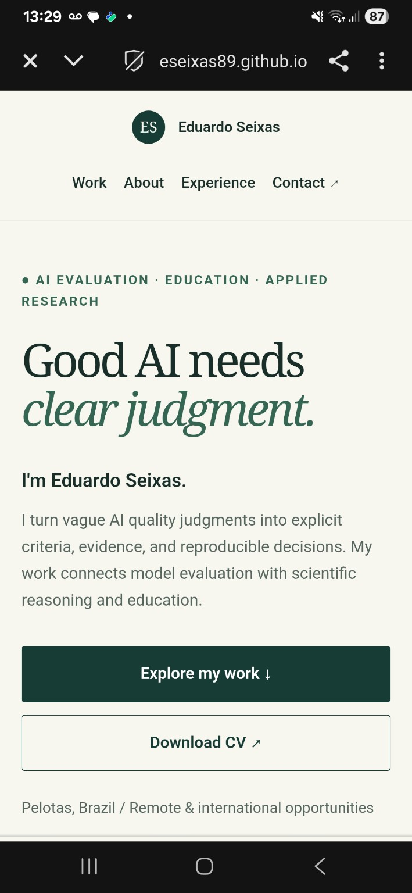
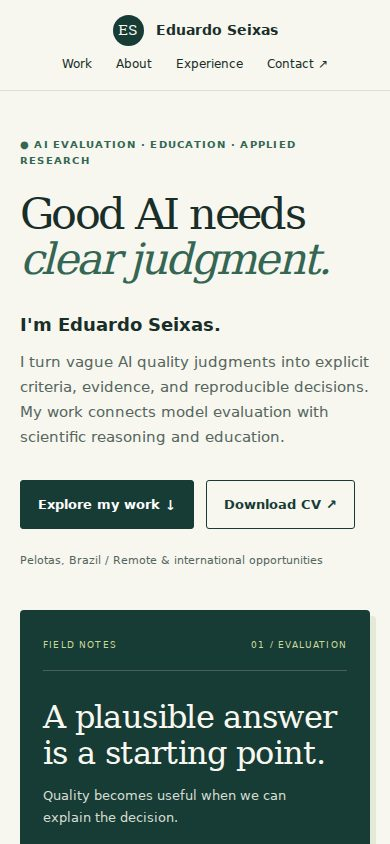
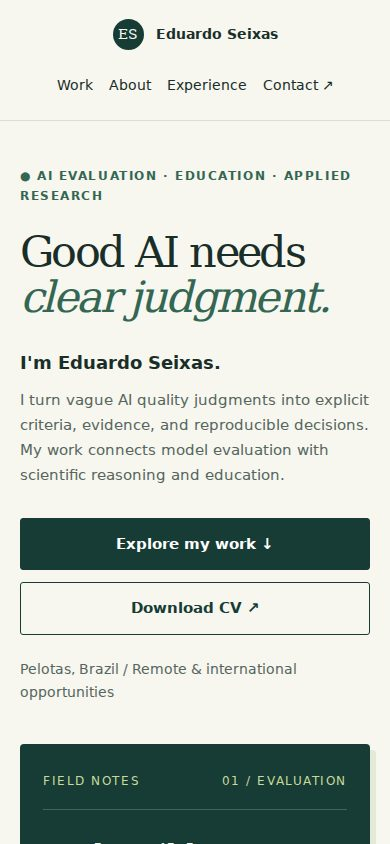
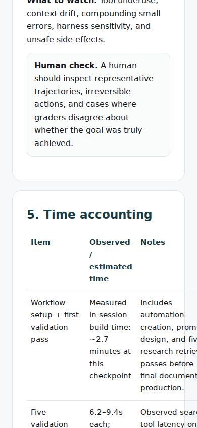
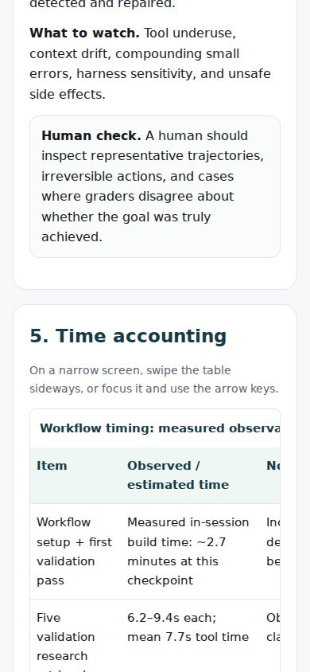
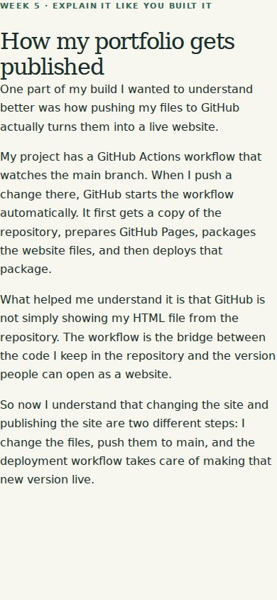
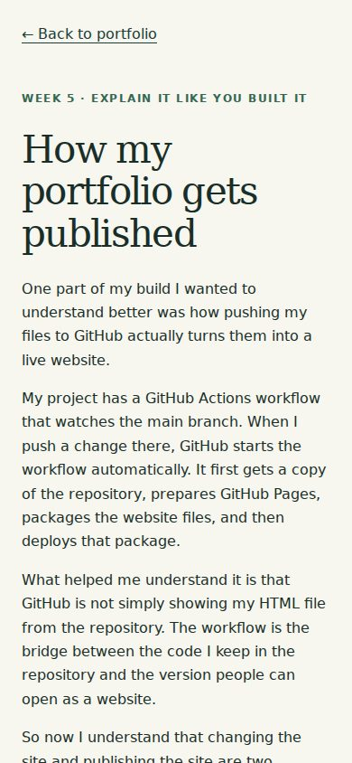

Open It on Your Phone / Fix log / 17 October 2026
Readable. Tappable.
Checked across widths.
This log records real problems found in the portfolio, the fixes, and the checks performed with AI assistance. The before/after pairs below are browser captures at a 390 × 844 CSS-pixel viewport. A separate screenshot supplied by the portfolio owner records the homepage on a physical phone.
Open the updated portfolio ↗ · Open the working demo ↗ · Open the repository ↗
What was broken, and what changed
- The timing table pushed the whole workflow page sideways. Before: document width exceeded a 320-pixel viewport by 106 pixels, and a 390-pixel viewport by 36 pixels. After: the table is inside its own labelled, keyboard-focusable scroll region, with a caption, column headers, and visible instructions. The page itself stays within the viewport.
- Green labels had insufficient contrast on five project pages. The automated audit found 31 affected elements using the old accent, including a measured 3.94:1 ratio on the light page background. The accent was darkened from
#2b8a78to#176b5c. The same automated checks then reported no remaining contrast violations on the audited pages. - Standalone navigation links were small touch targets. The main navigation and project links were about 20 pixels tall. They now have at least 44-pixel-high clickable areas, with wrapping instead of forcing a single row on narrow screens. The main call-to-action buttons stack on mobile.
- Supporting text was too small for comfortable mobile reading. Project tags were about 9 pixels and some metadata about 10–11 pixels. Tags are now 12 pixels, supporting text generally 14–15 pixels, and project body text 16 pixels at the default root font size. Contact links stack their labels and destinations on mobile.
- The publishing walkthrough had lost its reading layout. It still used
class="shell", which had no matching style. The content touched the screen edges. It now uses the shared article width, padding, and heading sizes. - Older project pages lacked an easy return path and skip link. A visible back-to-portfolio link, skip-to-main link, and consistent keyboard focus indicator were added. The hero also uses one column at intermediate tablet widths, and project detail labels have room to wrap without splitting short labels.
Physical-phone evidence supplied by the owner
The screenshot below shows the live homepage in portrait orientation, with 13:29 visible in the phone's status bar. The visible header, introduction, and buttons fit the screen without apparent clipping. This verifies only the visible layout, not the result of tapping the controls.

Before and after
Same browser viewport for each pair. These are emulated mobile-width captures. The horizontally scrollable table is intentionally wider than its own region; it no longer widens the entire page.
Home: clearer navigation, larger metadata, stacked buttons


Workflow table: page overflow contained


Publishing walkthrough: restored reading margins


Checks and their limits
- Reflow: all nine existing HTML pages checked at 320, 390, 768, 1024, and 1440 CSS pixels. After fixes, none caused document-level horizontal overflow. The new fix-log page is also checked at these widths.
- Automated accessibility: axe-core checks at 390 pixels using WCAG 2 A/AA, 2.1 AA, and 2.2 AA tags. No violations were reported after the fixes. This is a scoped automated result, not a claim of full WCAG conformance.
- Keyboard and enlarged text: the homepage skip link works; the table scrolls with arrow keys when focused; the homepage remains within the viewport when its root text size is doubled.
- Demo interaction: touch emulation at 390 × 844 with a 2× pixel density verified the evidence button, displayed file links, and no result overflow using fixture API responses. The previous feature's real public GitHub API test is documented in its separate evidence log.
- Internal links: the 28 original local links and anchors resolved; all eight distinct internal project/article links were actually clicked in the browser. The CV download was checked against the source PDF. New return links and fix-log image paths were also checked.
- External links: 38 of 39 distinct original HTTP(S) links returned HTTP 200 after redirects, including the repository, demo source, Calendly, and visual portfolio. LinkedIn returned HTTP 999 to the automated request and remains a manual check. An HTTP status checks reachability, not every destination's content or booking availability. The email link requires a configured email app and was not used to send a message.
- Images and payload: the homepage uses a text/CSS monogram and an SVG favicon and has no raster work images to compress. Existing local assets were about 83 KB for the CV and 85 KB for the earlier evidence screenshot. This log uses compressed JPEG screenshots with explicit dimensions and lazy loading; screenshots are not loaded on the homepage.
Owner-confirmed physical-phone result
Device: Samsung A15. Date: 17 October 2026. The portfolio owner supplied the screenshot above and confirmed in conversation that the following worked on the physical phone:
- Menu navigation by tapping.
- CV download.
- The live demonstration.
These are owner-reported interaction results. Browser/version, landscape layout, the table's swipe gesture, and LinkedIn were not separately confirmed. The automated external-link check's LinkedIn limitation remains documented above.
Resultado do teste em português
Em 17 de outubro de 2026, o proprietário enviou uma captura do portfólio aberto em um Samsung A15 e confirmou que o menu, o download do currículo e a demonstração funcionaram ao tocar no celular. O navegador e a versão não foram informados. O modo paisagem, o gesto de arrastar a tabela e o LinkedIn não tiveram confirmação separada.
Submission note after the phone check
Draft for the portfolio owner to review and adapt into their own words. Phone results below reflect the owner's confirmation.
I updated my portfolio for mobile, tablet, and desktop widths. The fix log records before/after changes to an overflowing table, low-contrast labels, small navigation targets and supporting text, and a walkthrough with missing reading margins. On 17 October 2026, I opened the live site on my Samsung A15 and confirmed that the menu, CV download, and demonstration worked. A real phone screenshot is included alongside the clearly labelled browser captures. The log also records the automated checks and their limits.
Download the scoped audit results (JSON) ↗
References and implementation
W3C: reflow · W3C: contrast · W3C: target size · Shared accessibility styles